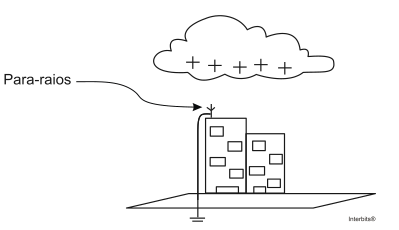

a) retirar do objeto 20 trilhões de prótons.
b) retirar do objeto 20 trilhões de elétrons.
c) acrescentar ao objeto 20 trilhões de elétrons.
d) acrescentar ao objeto cerca de 51 trilhões de elétrons.
e) retirar do objeto cerca de 51 trilhões de prótons.
|
a) 1,68.10–18. b) 4,32.10–19. |
c) 4,32.10–20. d) 4,32.10–18. |
e) 1,68.10–19. |
Dado: a carga elementar vale 1,6.10–19 C.
|
a) 1,20.109. b) 2,60.109. |
c) 5,50.109. d) 1,60.109. |
e) 2,56.109. |
|
a) atrito, contato e aterramento. b) indução, aterramento e eletroscópio. c) atrito, contato e indução. |
d) contato, aquecimento e indução. e) aquecimento, aterramento e carregamento. |
1) toca-se C em B, com A mantida a distância, e em seguida separa-se C de B.
2) toca-se C em A, com B mantida a distância, e em seguida separa-se C de A.
3) toca-se A em B, com C mantida a distância, e em seguida separa-se A de B.
Qual a carga final da esfera A? Dê sua resposta em função de Q.
|
a) Q/10. b) –Q/4. |
c) Q/4. d) -Q/8. |
e) -Q/2. |
a) Em dias muito quentes e úmidos, porque o ar se torna condutor.
b) Em dias secos, pois o ar seco é bom isolante e os corpos se eletrizam mais facilmente.
c) Em dias frios e chuvosos, pois a água da chuva é ótima condutora de eletricidade.
d) A umidade do ar não influi nos fenômenos da eletrostática, logo essas descargas poderão ocorrer a qualquer momento.
a) quando atritou o vidro e a lã, ela retirou prótons do vidro tornando-o negativamente eletrizado, possibilitando que atraísse os pedaços de papel.
b) o atrito entre o vidro e a lã aqueceu o vidro e o calor produzido foi o responsável pela atração dos pedaços de papel.
c) ao esfregar a lã e o vidro, a faxineira criou um campo magnético ao redor do vidro semelhante ao existente ao redor de um ímã.
d) ao esfregar a lã e o vidro, a faxineira tornou-os eletricamente neutros, impedindo que o vidro repelisse os pedaços de papel.
e) o atrito entre o vidro e a lã fez um dos dois perder elétrons e o outro ganhar, eletrizando os dois, o que permitiu que o vidro atraísse os pedaços de papel.
|
a) 1,0.1013. b) 2,0.1013. |
c) 3,0.1013. d) 4,0.1013. |
e) 8,0.1013. |
a) um fica eletrizado positivamente e o outro negativamente.
b) um fica eletrizado negativamente e o outro permanece neutro.
c) um fica eletrizado positivamente e o outro permanece neutro.
d) ambos ficam eletrizados negativamente.
e) ambos ficam eletrizados positivamente.
|
a) Zero. b) Q/8. |
c) Q/4. d) Q/2. |
e) 2Q/3. |
|
a) iguais, iguais e iguais; b) iguais, iguais e contrários; |
c) contrários, contrários e iguais; d) contrários, iguais e iguais; |
e) contrários, iguais e contrários. |
|
a) não pode ser carregado eletricamente; b) não contém elétrons; c) tem de estar no estado sólido; |
d) tem, necessariamente, resistência elétrica pequena; e) não pode ser metálico. |
I. Se um corpo neutro perder elétrons, ele fica eletrizado positivamente;
II. Atritando-se um bastão de vidro com uma flanela, ambos inicialmente neutros, eles se eletrizam com cargas iguais;
III. O fenômeno da indução eletrostática consiste na separação de cargas no induzido pela presença do indutor eletrizado;
IV. Aproximando-se um condutor eletrizado negativamente de outro neutro, sem tocá-lo, este permanece com carga total nula, sendo, no entanto, atraído pelo eletrizado.
V. Um corpo carregado pode repelir um corpo neutro.
Estão corretas
|
a) apenas a I, a II e a IV. b) apenas a I, a III, a IV e a V. |
c) apenas a I, a IV e a V. d) apenas a II e a IV. |
e) apenas a II, a III e a V. |
|
a) X e Y têm cargas positivas. b) Y e Z têm cargas negativas. c) X e Z têm cargas de mesmo sinal. |
d) X e Z têm cargas de sinais diferentes. e) Y e Z têm cargas positivas. |
Durante uma tempestade, uma nuvem carrega da positivamente aproxima-se de um edifício que possui um para-raios, conforme a figura a seguir:

De acordo com o enunciado, pode-se afirmar que, ao estabelecer-se uma descarga elétrica no para-raios,
a) prótons passam da nuvem para o para-raios.
b) prótons passam do para-raios para a nuvem.
c) elétrons passam da nuvem para o para-raios.
d) elétrons passam do para-raios para a nuvem.
e) elétrons e prótons transferem-se de um corpo a outro.